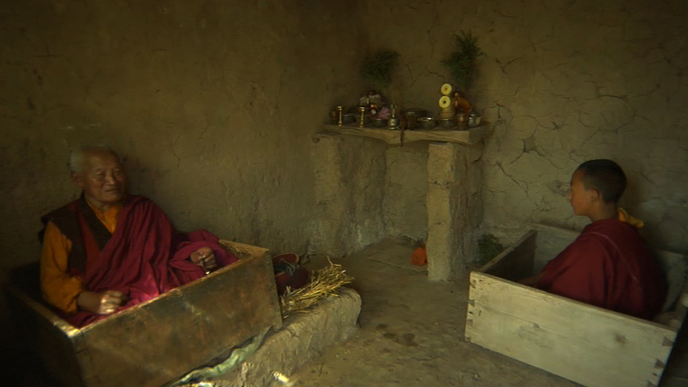

|
Diamond Vehicle - Trailer
Produced by: Union Docs
Directed by: Christopher Allen
Editor: Hemal Trivedi
Location: Tibet/New York
Year: In production
Length: 2:00
Website: diamondvehicle.com
Lama Norlha Rinpoche never doubted his teacher; not in
seven years of meditation retreat, not escaping a
concentration camp, not crossing the Himalayas on foot,
and not leaving behind everything familiar to bring his
faith to NYC. Now, under great threat and with students
in America, China and Tibet, Rinpoche fights to pass on
his teacher's wisdom, Vajrayana or the Diamond Vehicle.
The film profiles the relationship between Lama Norlha
and his 25-year-old American student Justin as he
prepares to enter another three year retreat to learn
Vajrayana. The film featured in Independent Film Week.
|